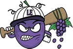
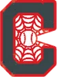

Low Minors · SS
Steve Carboni
- Team
- Lake Erie Crushers
- Organization
- Cleveland Spiders
- Position
- SS
- Bats/Throws
- L/R
- Height/Weight
- 5'11", 199 lb
- Born
- Jan 11, 1979
- Age
- 23
- Uniform
- #38
- Salary
- $244,000
AVG/OBP/SLG.200/.200/.200
HR0
RBI1
SB0
OPS+3league = 100
WAR0.0OOTP
2002 batting
| Team | Lg | G | PA | AB | R | H | 2B | 3B | HR | RBI | BB | K | SB | AVG | OBP | SLG | OPS |
|---|---|---|---|---|---|---|---|---|---|---|---|---|---|---|---|---|---|
| LkEr | Low Minors | 2 | 2 | 2 | 0 | 1 | 0 | 0 | 0 | 1 | 0 | 1 | 0 | .500 | .500 | .500 | 1.000 |
| AKRN | High Minors | 5 | 3 | 3 | 0 | 0 | 0 | 0 | 0 | 0 | 0 | 3 | 0 | .000 | .000 | .000 | .000 |
2002 batting, advanced
| Team | Lg | PA | Pit/PA | SH | SF | HBP | IBB | GIDP | CS | OPS+ | ISO | BABIP | BB% | K% | WPA | UBR | WAR |
|---|---|---|---|---|---|---|---|---|---|---|---|---|---|---|---|---|---|
| LkEr | Low Minors | 2 | 3.50 | 0 | 0 | 0 | 0 | 0 | 0 | 156 | .000 | 1.000 | 0.0% | 50.0% | 0.10 | 0.0 | 0.1 |
| AKRN | High Minors | 3 | 5.00 | 0 | 0 | 0 | 0 | 0 | 0 | -100 | .000 | - | 0.0% | 100.0% | 0.00 | 0.0 | -0.1 |
Streaks
Longest hitting streak: 1 games (Apr 30 to Apr 30); current: none
Longest on-base streak: 1 games (Apr 30 to Apr 30)
Batting splits
| Split | G | PA | AB | R | H | 2B | 3B | HR | RBI | BB | K | SB | AVG | OBP | SLG | OPS | ISO | BABIP | BB% | K% |
|---|---|---|---|---|---|---|---|---|---|---|---|---|---|---|---|---|---|---|---|---|
| vs LHP | 1 | 1 | 1 | 0 | 0 | 0 | 0 | 0 | 0 | 0 | 1 | - | .000 | .000 | .000 | .000 | .000 | - | 0.0% | 100.0% |
| vs RHP | 4 | 4 | 4 | 0 | 1 | 0 | 0 | 0 | 1 | 0 | 3 | - | .250 | .250 | .250 | .500 | .000 | 1.000 | 0.0% | 75.0% |
| Home | 2 | 1 | 1 | 0 | 0 | 0 | 0 | 0 | 0 | 0 | 1 | 0 | .000 | .000 | .000 | .000 | .000 | - | 0.0% | 100.0% |
| Road | 5 | 4 | 4 | 0 | 1 | 0 | 0 | 0 | 1 | 0 | 3 | 0 | .250 | .250 | .250 | .500 | .000 | 1.000 | 0.0% | 75.0% |
By month
| Month | G | PA | AB | R | H | 2B | 3B | HR | RBI | BB | K | SB | AVG | OBP | SLG | OPS | ISO | BABIP | BB% | K% |
|---|---|---|---|---|---|---|---|---|---|---|---|---|---|---|---|---|---|---|---|---|
| April | 6 | 4 | 4 | 0 | 1 | 0 | 0 | 0 | 1 | 0 | 3 | 0 | .250 | .250 | .250 | .500 | .000 | 1.000 | 0.0% | 75.0% |
| May | 1 | 1 | 1 | 0 | 0 | 0 | 0 | 0 | 0 | 0 | 1 | 0 | .000 | .000 | .000 | .000 | .000 | - | 0.0% | 100.0% |
Situational
| Situation | PA | AB | H | 2B | 3B | HR | RBI | BB | K | AVG | OBP | SLG | OPS |
|---|---|---|---|---|---|---|---|---|---|---|---|---|---|
| Bases empty | 2 | 2 | 0 | 0 | 0 | 0 | 0 | 0 | 2 | .000 | .000 | .000 | .000 |
| Runners on | 3 | 3 | 1 | 0 | 0 | 0 | 1 | 0 | 2 | .333 | .333 | .333 | .667 |
| Runners in scoring position | 2 | 2 | 1 | 0 | 0 | 0 | 1 | 0 | 1 | .500 | .500 | .500 | 1.000 |
| RISP, two outs | 1 | 1 | 0 | 0 | 0 | 0 | 0 | 0 | 1 | .000 | .000 | .000 | .000 |
| Innings 7-9 | 5 | 5 | 1 | 0 | 0 | 0 | 1 | 0 | 4 | .200 | .200 | .200 | .400 |
Situational splits are rebuilt from every plate appearance in the export (base/out state when the PA began). "RBI" counts runs batted in on that PA.
2002 batting game log
| Date | Opp | Score | Pos | Bat | PA | AB | R | H | 2B | 3B | HR | RBI | BB | K | SB | CS | HBP | GIDP | WPA |
|---|---|---|---|---|---|---|---|---|---|---|---|---|---|---|---|---|---|---|---|
| May 11 | vsChHi | W 10-2 | PH | 1 | 1 | 1 | 0 | 0 | 0 | 0 | 0 | 0 | 0 | 1 | 0 | 0 | 0 | 0 | 0.000 |
| Apr 30 | @KNOX | W 8-6 | SS | 8 | 1 | 1 | 0 | 1 | 0 | 0 | 0 | 1 | 0 | 0 | 0 | 0 | 0 | 0 | 0.104 |
| Apr 24 | @AuGr | L 7-8 | SS | 8 | 1 | 1 | 0 | 0 | 0 | 0 | 0 | 0 | 0 | 1 | 0 | 0 | 0 | 0 | -0.001 |
| Apr 23 | @AuGr | W 11-3 | PH | 4 | 1 | 1 | 0 | 0 | 0 | 0 | 0 | 0 | 0 | 1 | 0 | 0 | 0 | 0 | 0.000 |
| Apr 17 | @DCP | L 11-12 | PH | 8 | 1 | 1 | 0 | 0 | 0 | 0 | 0 | 0 | 0 | 1 | 0 | 0 | 0 | 0 | 0.000 |
| Apr 5 | @VERM | L 2-12 | SS | 0 | 0 | 0 | 0 | 0 | 0 | 0 | 0 | 0 | 0 | 0 | 0 | 0 | 0 | 0.000 | |
| Apr 3 | vsSTIF | L 2-4 | SS | 0 | 0 | 0 | 0 | 0 | 0 | 0 | 0 | 0 | 0 | 0 | 0 | 0 | 0 | 0.000 |
2002 fielding by position
| Team | Lg | Pos | G | GS | Inn | TC | PO | A | E | DP | FPct | ZR | Arm | Framing | SB | CS | CS% | PB |
|---|---|---|---|---|---|---|---|---|---|---|---|---|---|---|---|---|---|---|
| AKRN | High Minors | SS | 3 | 0 | 5.2 | 4 | 0 | 3 | 1 | 0 | .750 | -0.3 | - | - | - | - | - | - |
| LkEr | Low Minors | SS | 1 | 0 | 3.2 | 2 | 0 | 2 | 0 | 2 | 1.000 | 0.2 | - | - | - | - | - | - |
ZR (zone rating), Arm and Framing are OOTP's runs-above-average figures. SB/CS/CS% are base stealers against him as a catcher.
Career batting
Contract
| Year | Salary |
|---|---|
| 2002 | $244,000 |
1-year contract with 